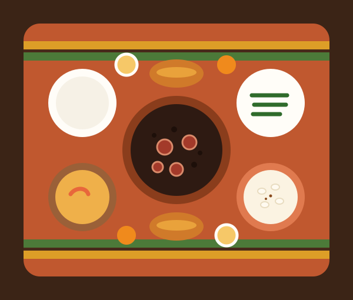
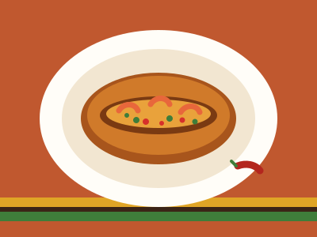
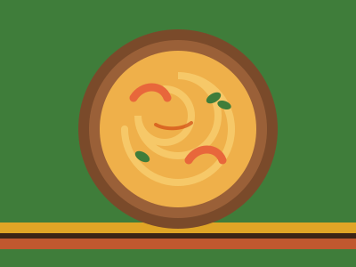
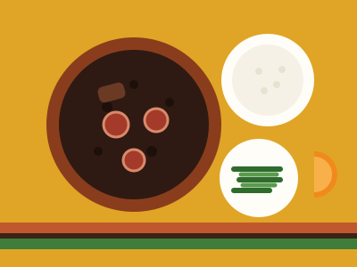
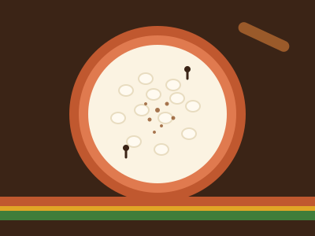

65%
dos lares chefiados por pessoas pretas ou pardas convivem com algum nível de insegurança alimentar.
Fonte: II VIGISAN – Rede PENSSAN, 2022
Organização sem fins lucrativos
Comida é direito, cultura e memória.
Servimos um prato bom de verdade — saboroso, nutritivo e cheio de história — para quem mais sofre com a fome no Brasil: a população negra. Nosso foco é ela, mas nossa mesa nunca vai fechar a porta para ninguém.

O problema
No Brasil, as famílias negras são as que mais sofrem com a fome e com a insegurança alimentar — ou seja, não ter certeza se vai ter comida suficiente e de qualidade todos os dias. Isso é resultado de desigualdades históricas de renda, emprego e acesso a direitos.
65%
dos lares chefiados por pessoas pretas ou pardas convivem com algum nível de insegurança alimentar.
Fonte: II VIGISAN – Rede PENSSAN, 2022
18,1%
dos lares chefiados por pessoas pretas ou pardas passam fome — contra 10,6% dos lares chefiados por pessoas brancas.
Fonte: II VIGISAN – Rede PENSSAN, 2022
33 milhões
de brasileiros passavam fome em 2022 — e a maioria vive em lares chefiados por pessoas negras.
Fonte: II VIGISAN – Rede PENSSAN, 2022
Quem somos
Garantir o acesso a alimentação adequada para famílias negras em situação de vulnerabilidade, valorizando os saberes da culinária afro-brasileira.
Um Brasil onde nenhuma família passe fome e onde a cultura alimentar negra seja reconhecida como patrimônio de todos.
Não queremos só "dar comida": queremos servir um prato bom e melhorado — com ingredientes frescos, equilíbrio nutricional e o sabor da culinária afro-brasileira — o mesmo prato que a gente serviria para a nossa própria família.
Nosso foco é a população negra, porque os dados mostram que ela é a mais atingida pela fome no país. Isso não significa excluir ninguém: quem chegar com fome vai comer. Focar é escolher onde começar, não fechar a porta.
O que fazemos
Distribuição de cestas básicas e refeições em comunidades, priorizando famílias em maior vulnerabilidade.
Hortas comunitárias e apoio a agricultores negros e quilombolas, comprando direto de quem planta.
Oficinas de culinária afro-brasileira e nutrição: cozinhar bem, com pouco, e com muito sabor.
Resgate de receitas e saberes tradicionais com mais velhos, terreiros e comunidades, registrando nossa memória.
Cultura na mesa
A culinária afro-brasileira nasceu da criatividade, da resistência e da fé de povos africanos e seus descendentes. Ela está em todo o país — e na mesa de todo mundo.

Origem: Bahia, com raízes iorubás (África Ocidental)
Curiosidade: o ofício das baianas de acarajé é reconhecido como Patrimônio Cultural Imaterial do Brasil pelo IPHAN.

Origem: Bahia e Pará, influência africana
Curiosidade: na Bahia é feito com pão; no Pará, costuma levar farinha de trigo e é servido com arroz.

Origem: Brasil, com saberes africanos e europeus
Curiosidade: é tema de debate entre historiadores — mas é certo que a cozinha negra ajudou a transformá-la em prato nacional.

Origem: Nordeste, nome de origem quimbundo (Angola)
Curiosidade: no Sul e Sudeste é chamado de canjica — e é estrela das festas juninas.
Como funciona
Junto com lideranças comunitárias, escolas e postos de saúde, mapeamos as famílias que mais precisam.
Recebemos doações de alimentos e recursos, e compramos de agricultores negros e quilombolas.
Entregamos cestas e refeições e realizamos oficinas de culinária e nutrição nas comunidades.
Visitamos as famílias regularmente para entender o que mudou e o que ainda falta.
Do zero
Hoje a Mesa Negra ainda é uma ideia. Este é o nosso plano, passo a passo, para transformar ela em realidade. Os prazos são estimativas — vamos atualizar aqui conforme cada etapa for acontecendo.
Pesquisar os bairros onde a fome é maior, conversar com lideranças comunitárias, terreiros, igrejas e escolas, e entender o que as famílias realmente precisam.
Do que precisamos: tempo, conversa e organização. Custo quase zero.
Registrar a Mesa Negra como associação sem fins lucrativos (estatuto, ata e CNPJ) e abrir uma conta bancária só da ONG, para que nenhum real se misture com dinheiro pessoal.
Do que precisamos: taxas de cartório e ajuda de um(a) contador(a) ou advogado(a) voluntário(a).
Começar pequeno: usar uma cozinha emprestada (de associação de bairro, igreja, terreiro ou escola), 1 dia por semana, servindo cerca de 100 pratos. Montar o cardápio com ajuda de nutricionista.
Do que precisamos: alimentos, gás, embalagens, voluntários na cozinha.
Mais dias de cozinha, horta comunitária, oficinas de culinária e compra direta de agricultores negros e quilombolas. Só damos o próximo passo quando o anterior estiver funcionando bem.
Do que precisamos: doações mensais, parcerias fixas e um espaço próprio no futuro.
Transparência
Quem doa merece saber exatamente o que acontece com cada real. Aqui está, sem rodeios.
Pix e doação mensal. A doação mensal é a mais importante, porque deixa a gente planejar as compras do mês.
Vendemos pratos em eventos: quem pode pagar compra o seu e ajuda a pagar o prato de quem não pode.
Mercados, padarias e feirantes doando alimentos ou dando desconto nas compras da ONG.
Inscrever o projeto em editais públicos e de empresas voltados a segurança alimentar e cultura negra.
Com roupas e prêmios doados. Todo o valor arrecadado vai para a cozinha.
Alimento doado vira prato. Nunca vendemos o que recebemos como doação.
* Isto é uma meta, não um resultado. Quando a cozinha começar, vamos trocar por números reais e explicar qualquer diferença.
Publicamos quanto entrou, quanto saiu e com o quê — com as notas fiscais.
Somos voluntários. O dinheiro doado é para o projeto, não para nós.
Estamos começando. Vamos mostrar o que já fizemos, não o que gostaríamos de ter feito.
Não publicamos fotos de quem recebe comida sem autorização e não usamos a fome como espetáculo.
Atrasos, mudanças de plano ou erros serão explicados aqui, com clareza.
Se você doar para algo específico (ex.: horta), o valor vai para isso.
Doar
Cada doação vira comida de verdade na mesa de uma família. Estimamos que um prato completo custe cerca de R$ 8 — vamos confirmar esse número na cozinha piloto.
Como ajudar
Arroz, feijão, fubá, óleo, leite e itens de higiene. Prefere doar dinheiro? Veja como doar.
Ajude na arrecadação, na distribuição, nas oficinas ou no registro de receitas.
Compartilhe nosso trabalho nas redes e converse sobre o tema na escola e em casa.
Equipe
Somos uma equipe voluntária dividida em quatro frentes. Cada uma tem responsáveis, metas e presta contas para as outras.
Organiza o plano, as parcerias e garante que cada fase saia do papel.
Gestão e parcerias
Monta o cardápio, prepara os pratos e cuida da qualidade e da higiene.
Cardápio e preparo
Cuida das doações, das compras e publica a prestação de contas todo mês.
Arrecadação e contas
Conta nossa história nas redes, com respeito e sem expor quem atendemos.
Redes e relacionamento
Quer fazer parte de uma dessas frentes? Seja voluntário.
Contato
Dúvidas, parcerias, sugestões ou se você ou alguém que você conhece está passando por dificuldade: escreva pra gente. Toda mensagem é lida por uma pessoa da equipe.
Não precisa ter vergonha. Escolha "Preciso de ajuda com alimentação" no formulário abaixo. Suas informações ficam só com a equipe e nunca serão divulgadas.
Em breve — número oficial da ONG
Em breve — e-mail oficial da ONG
@mesanegra
Respondemos em até 3 dias úteis.
Não. Nosso foco é a população negra, porque é a mais atingida pela fome, mas ninguém que chegar com fome vai sair sem comer.
Envie uma mensagem com o assunto "Preciso de ajuda com alimentação" ou procure a liderança comunitária do seu bairro. Vamos conversar com você com respeito e sigilo.
Ainda não. Só vamos receber dinheiro quando a ONG tiver CNPJ e conta bancária própria, para que tudo seja transparente. Doações de alimentos e trabalho voluntário já são bem-vindos.
Todo mês vamos publicar a prestação de contas aqui no site, com o que entrou, o que saiu e as notas fiscais. Veja nossos compromissos de transparência.
Sim! Mercados, restaurantes, padarias e outras empresas podem doar alimentos, espaço, transporte ou patrocinar um dia de cozinha. Fale com a gente pelo formulário.
Não. Tem tarefa para todo mundo: cozinha, organização, transporte, redes sociais e registro de receitas. A gente ensina.